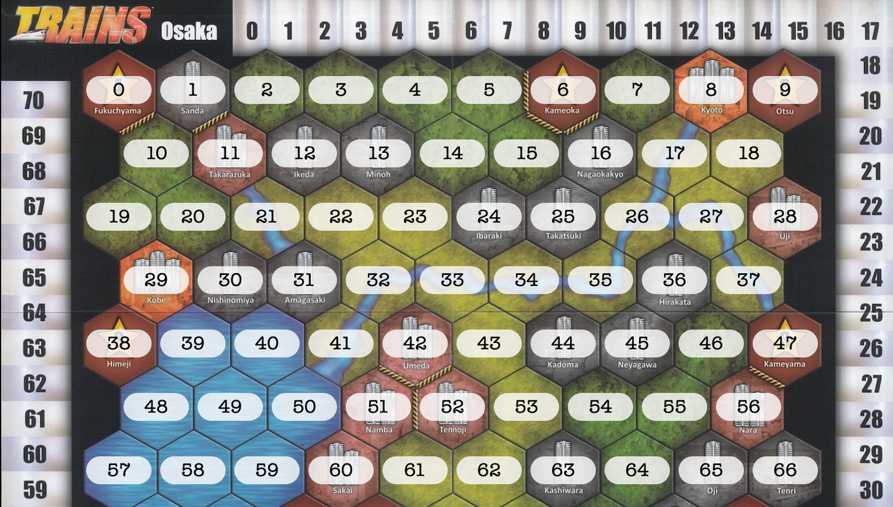
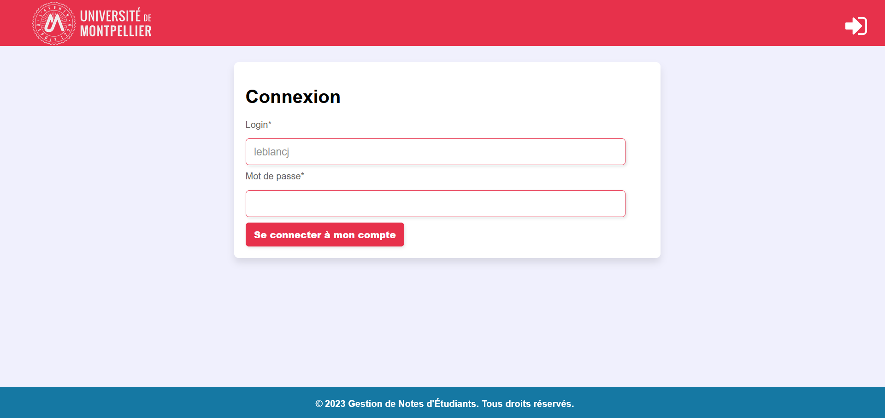
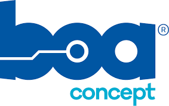

SAEProjet Trains
Développement du jeu japonais « Trains » en Java orienté objet avec interface graphique FXML.
Voir le projetÉtudiant en 3ème année de BUT Informatique en alternance, passionné par le développement web et logiciel
Passionné d'informatique depuis l'adolescence, j'ai commencé la programmation en créant des petits jeux vidéo. Cette curiosité s'est transformée en vocation : je suis aujourd'hui en 3ème année de BUT Informatique en alternance chez Boa Concept, où je développe mes compétences au quotidien.
Mon objectif : intégrer un Master en Informatique/Management pour consolider ma formation et être pleinement opérationnel dans mon futur métier.
Formation approfondie en programmation (Java, PHP, C#, SQL), gestion de projet Agile, développement web full-stack et architecture logicielle. Actuellement en 3ème année en alternance.
Développement d'un logiciel de statistiques en C# pour la hotline. Découverte de technologies comme FetchXML et XAML dans un environnement professionnel.
Spécialité Sciences et Technologies de l'Industrie et du Développement Durable, parfaitement adaptée à mon projet professionnel en informatique.
Découverte de la programmation en autodidacte via la création de petits jeux vidéo.
Déployer des services dans une architecture réseau
Optimiser une base de données et assurer la sécurité
Appliquer une démarche de gestion de projet
Découvrez une sélection de mes projets réalisés en formation

SAEDéveloppement du jeu japonais « Trains » en Java orienté objet avec interface graphique FXML.
Voir le projet
SAEApplication web de gestion d'étudiants avec système d'agrégation et génération de PDF.
Voir le projet
StageDéveloppement d'un logiciel de statistiques en C# pour la hotline de l'entreprise.
Voir le projet